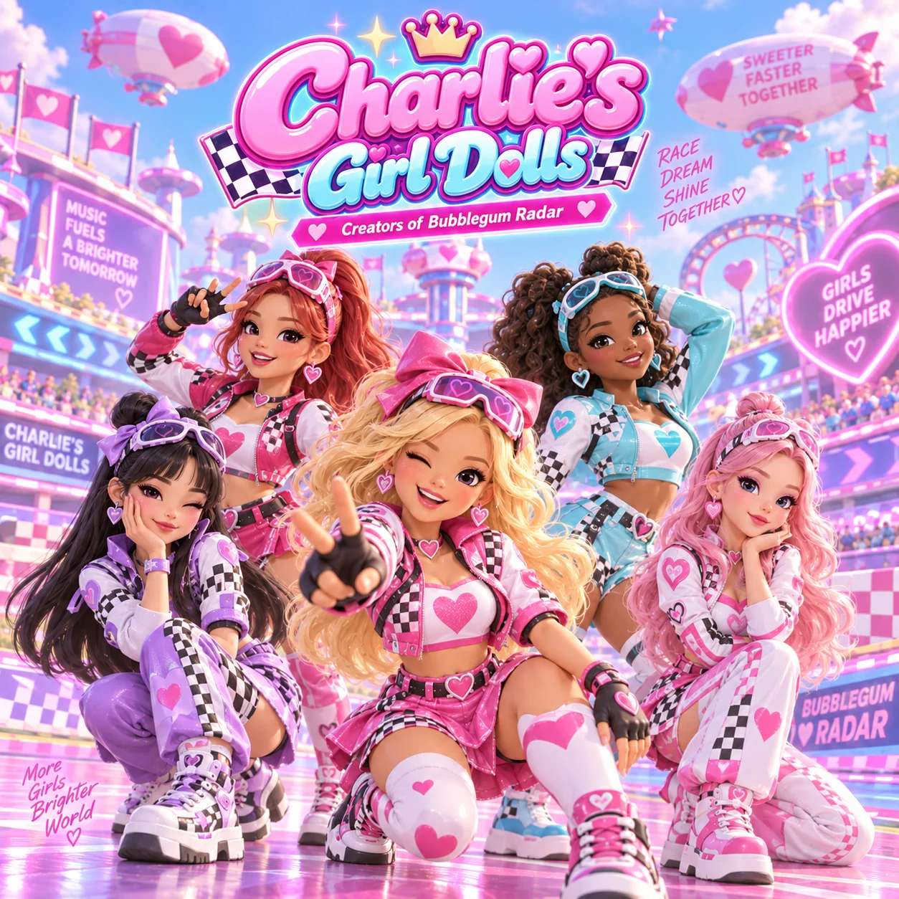
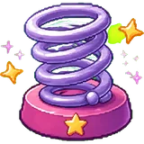

Charlie's Girl Dolls
♥ Creators of Bubblegum Radar ♥
Five girls, one pink speedway, and the songs that start every American Girl Doll Race. Sweeter. Faster. Together.
- Race · Dream · Shine · Together
- Girls drive happier
- Music fuels a brighter tomorrow
Who is Charlie?
Nobody has met Charlie. Charlie is the name on the studio door, the crown on the logo and the voice on the intercom that counts the girls in before every take. The girls are the band. Charlie is the reason they have a pink blimp.
Charlie's Girl Dolls started as the halftime act at a doll-racing circuit, the kind of show where the racers wear heart-shaped goggles and the hurdles are white picket fences. The five of them were meant to fill three minutes between heats. The crowd did not let them leave, so the circuit gave them the whole soundtrack instead.
Their sound is bubblegum with a turbo: candy-bright synths, stacked harmonies, a chant in every chorus you can shout from the grandstand, and a beat that runs at exactly the pace of a doll in platform sneakers taking a hurdle.
- MembersFive
- Debut singleBubblegum Radar
- SignaturePlastic Shoes, the race theme
- ColoursPink, lavender, sky, checkered
- MottoMore girls, brighter world
The dolls
Every girl races in her own colour. On stage they line up the same way they line up on the grid.
-
Bomi
Leader · main vocal · pink
Blonde, loud, first off the line. Wears the pink jacket and the biggest bow, winks at the camera on every chorus, and wrote the shout in Plastic Shoes.
-
Rina
Main dancer · rap · hot pink
Red hair, checkered crop jacket, fingerless gloves. Choreographs everything and treats the pit lane as a runway.
-
Zoe
Vocal · sky blue
Curls, sky-blue racing jacket, the high harmony on every track. Sings the bridge of Snow in My Pocket alone and makes the whole stadium go quiet.
-
Yuna
Rap · producer · lavender
Black hair, lavender bow, purple checker trousers. Builds the beats on a laptop in the blimp and pretends not to care about the crowd. Cares a lot.
-
Cheri
Harmonies · visual · white
Pink hair, white racing suit with pink hearts, the calmest person on the grid. Hums the melody of Sugar Castle Run before it was a song.
Music
One song for every world on the circuit. Plastic Shoes is the race theme; the other four play when the track changes.
Now playing —
The recordings could not be reached right now. Try again in a moment.
The soundtrack to
American Girl Doll Race
Up to four dolls, one track, white picket hurdles and five worlds to run through: a farm, a fairy glade, a village, a winter road and a valley of castles. Springs launch you, boost chevrons make you sprint, the red button does something rude to the racer beside you, and the snowman is exactly as slippery as he looks.
Charlie's Girl Dolls wrote one song per world. When the track changes, so does the song.
- BoostFaster, together

SpringOver the hurdle- Big red buttonSorry, not sorry
- SnowmanSnow in my pocket
Sweeter Faster Together tour
Five worlds, five songs, one blimp. Halftime at every heat.
| Heat | World | Opening song | Notes |
|---|---|---|---|
| 01 | The Farm | Plastic Shoes | Season opener. Hurdles freshly painted. |
| 02 | Fairy Glade | Bubblegum Radar | Unicorns in the infield. Pegasus flyover. |
| 03 | The Village | Ghent Sweet Parade | Parade route doubles as the track. |
| 04 | Winter | Snow in My Pocket | Bring mittens. Watch the snowman. |
| 05 | The Castles | Sugar Castle Run | Finale. Fireworks from the blimp. |